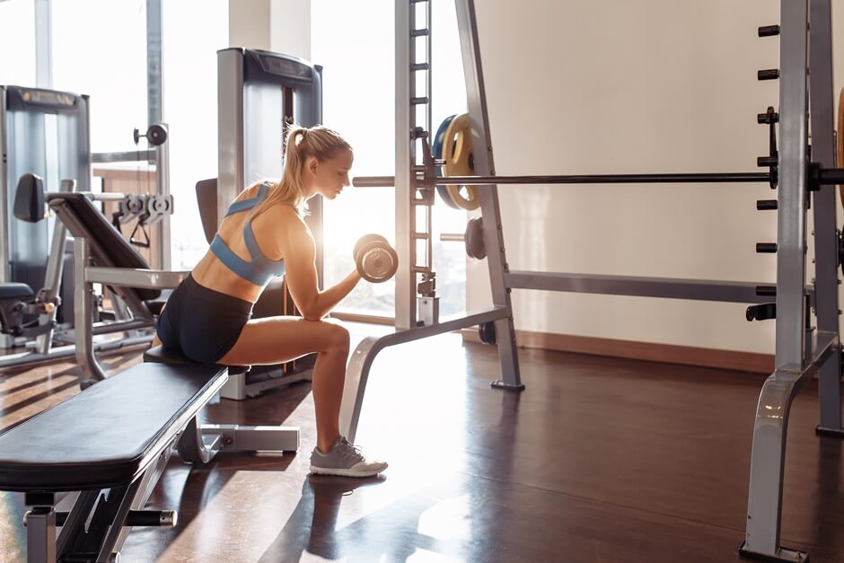

Modalidades de Esportes
Principais Esportes para desenvolvimento muscular:
Musculação
Cross fit
Natação
Musculação:
A musculação é uma modalidade de exercício resistido que tem como objetivo principal
o desenvolvimento da massa muscular e o aprimoramento do condicionamento físico.
É amplamente utilizada para construir e fortalecer os músculos, bem como melhorar a composição corporal.
Melhora do Condicionamento Físico:
1. Aumento da força muscular: A musculação fortalece os músculos, o que resulta em um aumento significativo da força física.
2. Melhora da resistência muscular: O treinamento com pesos ajuda a melhorar a resistência dos músculos, permitindo que você realize atividades físicas por mais tempo sem fadiga excessiva.
3. Aumento da capacidade funcional: A musculação melhora a capacidade do corpo em executar tarefas diárias com mais facilidade, como levantar objetos pesados, subir escadas ou carregar compras.
4. Melhora da postura e estabilidade: O treinamento de musculação fortalece os músculos do core, estabilizando a coluna vertebral e melhorando a postura.
5. Benefícios metabólicos: A musculação aumenta o metabolismo basal, o que significa que seu corpo queima mais calorias em repouso. Isso contribui para a perda de gordura e melhora da composição corporal.
Crossfit:
O Crossfit é uma modalidade de treinamento físico que combina exercícios de alta
intensidade e movimentos funcionais variados. Além de proporcionar ganhos de massa
muscular, o Crossfit é conhecido por seu efeito no condicionamento físico geral.
Melhora do Condicionamento Físico:
1. Estímulo muscular diversificado: O Crossfit utiliza uma variedade de movimentos e exercícios que trabalham diferentes grupos musculares, promovendo o desenvolvimento global da musculatura.
2. Treinamento de força e resistência: Os treinos de Crossfit envolvem o levantamento de pesos, movimentos ginásticos e cardiovasculares de alta intensidade, o que estimula o ganho de massa muscular e fortalecimento dos músculos.
3. Treinamento de corpo inteiro: O Crossfit é conhecido por sua abordagem de treinamento funcional, que visa trabalhar todos os principais grupos musculares do corpo em cada sessão de treino. Isso contribui para o desenvolvimento equilibrado da musculatura em todo o corpo.
4. Estímulo metabólico: Os treinos de alta intensidade do Crossfit aumentam o metabolismo, levando a uma maior queima de calorias durante e após o treino. Isso pode contribuir para a perda de gordura e definição muscular.
5. Variedade e adaptação: A natureza variada dos treinos de Crossfit desafia constantemente o corpo, evitando que ele se adapte completamente a uma rotina específica. Isso promove um progresso contínuo e estimula a hipertrofia muscular.
Natação:
A musculação é uma modalidade de exercício resistido que tem como objetivo principal
o desenvolvimento da massa muscular e o aprimoramento do condicionamento físico.
É amplamente utilizada para construir e fortalecer os músculos, bem como melhorar a composição corporal.
Melhora do Condicionamento Físico:
1. Aumento da capacidade pulmonar: A natação requer controle da respiração, o que fortalece os músculos respiratórios e melhora a capacidade pulmonar.
2. Melhora da resistência cardiovascular: A natação é um exercício aeróbico de baixo impacto que melhora a resistência cardiovascular, aumentando a capacidade do coração de bombear sangue de forma eficiente.
3. Aprimoramento da coordenação e equilíbrio: A natação exige movimentos coordenados e controle do corpo na água, o que melhora a coordenação motora e o equilíbrio.
4. Baixo estresse nas articulações: A água suporta o peso corporal, reduzindo o estresse nas articulações. Isso torna a natação uma ótima opção para pessoas com lesões ou condições que limitam a prática de atividades de alto impacto.
5. Alívio do estresse e melhora do bem-estar mental: A natação é conhecida por seus efeitos relaxantes e terapêuticos, ajudando a reduzir o estresse, aumentar a sensação de bem-estar e melhorar a saúde mental de forma geral.
Fichas de treino para iniciantes:


Circuito para iniciantes
Burpees: 10 repetições
Comece em pé, agache-se e coloque as mãos no chão à frente de você. Em seguida, chute as pernas para trás em uma posição de flexão. Faça uma flexão completa, traga as pernas de volta para a posição agachada e salte no ar, levantando os braços acima da cabeça.
Kettlebell Swings: 15 repetições
Segure um kettlebell com ambas as mãos na frente do corpo. Agache-se ligeiramente e, em seguida, estenda os quadris rapidamente para balançar o kettlebell para a frente e para cima, até a altura dos ombros. Em seguida, deixe-o balançar de volta entre as pernas, mantendo o movimento fluído.
Box Jumps: 12 repetições
Fique em frente a uma caixa resistente ou plataforma elevada. Agache-se levemente e, em seguida, salte no ar, estendendo completamente os quadris e joelhos, aterrissando na caixa com ambos os pés. Certifique-se de que a caixa esteja na altura apropriada para o seu nível de condicionamento físico.
Lunges Ponderados: 10 repetições para cada perna
Segure halteres nas mãos, um em cada lado do corpo. Dê um passo à frente com uma perna, flexionando os joelhos e abaixando o corpo até que o joelho traseiro esteja próximo ao chão. Empurre para cima com a perna da frente para retornar à posição inicial e repita com a outra perna.
Wall Balls: 15 repetições
Segure uma bola medicinal na frente do peito, com os cotovelos para cima. Agache-se e, em seguida, estenda as pernas rapidamente, lançando a bola no ar, em direção a uma parede alta. Pegue a bola e repita o movimento.
Double Unders: 50 repetições
Segure uma corda de pular nas mãos e comece a pular, passando a corda duas vezes sob os pés a cada salto. Tente manter um ritmo constante e pular o mais alto possível.

Aquecimento
200 metros de nado livre (crawl) em ritmo fácil.
4x50 metros de pernada de crawl com prancha, descansando 15 segundos entre cada série.
4x50 metros de nado costas, alternando a posição dos braços a cada 25 metros, descansando 15 segundos entre cada série.
Treino principal:
4x100 metros de nado crawl em ritmo moderado, descansando 20 segundos entre cada série.
6x50 metros de nado borboleta, alternando 25 metros de borboleta e 25 metros de crawl, descansando 15 segundos entre cada série.
4x200 metros de nado crawl, aumentando o ritmo gradualmente a cada 50 metros, descansando 30 segundos entre cada série.
8x25 metros de velocidade máxima (sprint) de nado crawl, descansando 30 segundos entre cada série.
Recuperação:
200 metros de nado livre em ritmo fácil.
4x50 metros de pernada de costas com prancha, descansando 15 segundos entre cada série.
4x50 metros de nado peito, alternando a posição dos braços a cada 25 metros, descansando 15 segundos entre cada série.
Alongamento:
Realize exercícios de alongamento para os principais grupos musculares utilizados na natação, como braços, ombros, pernas e core.
Grupos musculares
Os grupos musculares são divididos em três categorias gerais:
membros superiores, inferiores e tórax e abdômen.
Essa divisão tem um motivo simples e importante, pois, ao treinar
cada grupo de maneira separada e específica, o corpo acaba
exigindo mais das fibras musculares, garantindo o aumento de
massa muscular.
Veja, abaixo, como fazer a divisão correta sem prejudicar o treino e
conseguir atingir o resultado desejado com a hipertrofia.
O que são grupos musculares?
Cientificamente, o corpo humano é formado por mais ou menos
600 músculos e são eles os responsáveis pela nossa movimentação
diária, mas, de maneira resumida e em uma classificação usada
principalmente por treinadores, nossos músculos se dividem em:
• músculos do tórax e abdômen;
•membros superiores: costas, ombros, tríceps e bíceps;
•membros inferiores: coxas, gêmeos e glúteos.
É através dessa divisão muscular que os instrutores dividem os
exercícios buscando intensificar o máximo possível cada grupo para
que o objetivo seja alcançado.
Top 5 suplementos para melhorar performance
• Creatina
• Beta-alanina
• Cafeína
• Proteína em pó
• BCAAs
1° Creatina
A creatina é um composto natural encontrado principalmente nos músculos e
desempenha um papel fundamental na produção de energia durante exercícios de alta
intensidade. Ela aumenta os níveis de fosfocreatina nos músculos, que são utilizados
para regenerar o ATP (adenosina trifosfato), a principal fonte de energia celular. Ao
suplementar com creatina, é possível aumentar a capacidade de armazenamento de
fosfocreatina nos músculos, permitindo um desempenho melhorado em atividades
explosivas, como levantamento de peso e sprints.
2° Beta-alanina
3° Cafeína
A cafeína é um estimulante do sistema nervoso central que pode melhorar a
performance física de várias maneiras. Ela age bloqueando os receptores de adenosina
no cérebro, o que reduz a sensação de fadiga e aumenta o estado de alerta. Além disso, a
cafeína estimula a liberação de adrenalina, aumentando a disponibilidade de energia e
melhorando a capacidade de realizar exercícios de alta intensidade. A suplementação
com cafeína pode ajudar a aumentar a resistência, reduzir a percepção de esforço e
melhorar o desempenho atlético.
4° Proteína em pó
A proteína em pó, como a whey protein, é uma fonte conveniente e de
rápida absorção de aminoácidos essenciais. A suplementação com proteína em pó é
comumente utilizada para promover a recuperação muscular após o exercício, pois
fornece os blocos de construção necessários para a síntese de proteínas e o reparo
muscular. A ingestão adequada de proteína é essencial para o crescimento e a reparação
dos tecidos musculares, e a suplementação com proteína em pó pode ser útil para atingir
as necessidades proteicas diárias, especialmente em indivíduos que têm dificuldade em
consumir proteínas suficientes por meio da alimentação regular.
5° BCAAs
Os BCAAs são compostos pelos
aminoácidos leucina, isoleucina e valina. Eles são considerados aminoácidos essenciais
porque o corpo não pode produzi-los, sendo necessário obtê-los por meio da
alimentação ou suplementação. Os BCAAs desempenham um papel crucial na síntese de
proteínas e no reparo muscular. Durante o exercício intenso, os níveis de BCAAs podem
diminuir, e a suplementação com BCAAs pode ajudar a reduzir a fadiga muscular,
melhorar a recuperação e promover o crescimento muscular.